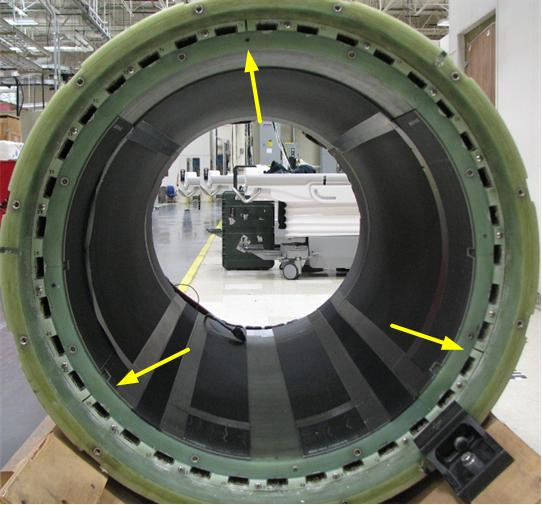
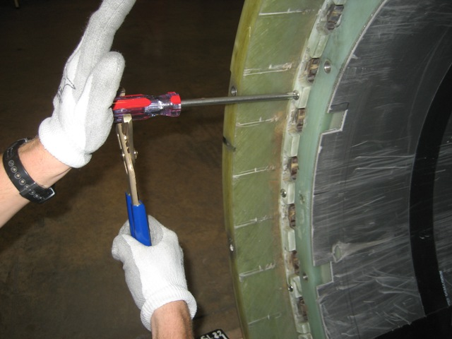
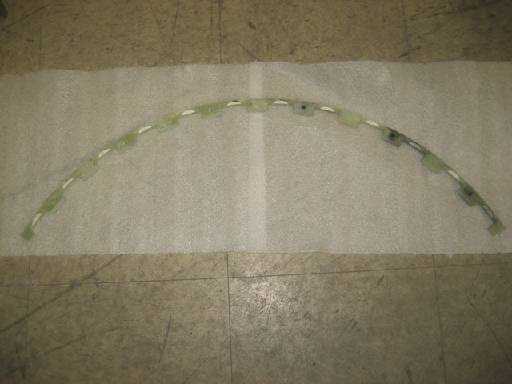

XRMw gradient coil shim retaining ring FRU kit (contains 6 screws and pack of sandpaper)
1
-
5431091
-
Non-ferrous toolkit
1
-
5112581
-
B0 quench box
1
-
2141701
-
Table 3. Consumables
Item
Quantity
Effectivity
Part number
Manufacturer
Sandpaper
As needed
-
-
-
Table 4. Safety
DANGER
STRONG MAGNETIC FIELD!
FERROUS MATERIALS CAN BECOME DANGEROUS PROJECTILES IN THE PRESENCE OF THE MAGNETIC FIELD PRODUCED BY THE MAGNET.
DO NOT BRING ANY FERROMAGNETIC TOOLS OR EQUIPMENT INTO THE MAGNET ROOM.
Warning
Personal injury and equipment damage
If the magnet is energized, tools and loose materials that contain ferrous material will be strongly attracted to the magnet and may become dangerous projectiles.
When servicing any magnetic equipment, it is critically important that the service engineer consciously plan the path to be taken when moving highly ferrous devices within the magnet environment. The path should be as far from the magnet as practical and avoid high flux-density fields.
Movement of ferrous material in the magnet room must follow the GE HealthCare procedure for that device.
When exiting, move away from the magnet in the most direct manner possible. Except when moving ferrous material to and from its native location on or near the magnet, the static magnetic field in any portion of the service path shall not exceed 200 Gauss.
Two (2) MR safety trained personnel must be present at all times when servicing highly ferrous devices in the areas of magnetic fields.
When planning a service path, it is critical that the path be clear and sufficiently wide. Make sure that there are no trip hazards, obstacles, clutter, slippery surfaces, or other items even partially restricting the path. If there are portable obstacles in a path, remove them from the area and replace them after the service action is completed. It is required to walk the path prior to beginning service to ensure that there is sufficient space through which to pass for yourself and the object being serviced.
Table 5. Required conditions
Condition
Reference
Effectivity
Remove patient front end bell and patient support bridge from the magnet bore as described in appropriate procedures before starting work.
-
-
About this task
Overview
This procedure describes how to replace the shim retaining ring on the XRMw gradient coil while the magnet is ramped. The retaining ring is split into 3 segments, which can be replaced individually. The segments are split between shim trays 36 and 0, trays 12 and 13, and trays 24 and 25.
Figure 1. Shim Retaining Ring

Procedure
DANGER
POTENTIAL FATAL INJURY!
BEFORE STARTING THE SHIMMING PROCEDURE: MAKE SURE TO REVIEW AND FULLY UNDERSTAND ALL SUPERCONDUCTING MAGNET PORTIONS OF MR MAGNET - SAFETY REQUIREMENTS.
Warning
POSSIBLE PERSONAL INJURY!
THE B0 POWER SUPPLY CONTAINS HIGHLY FERROUS MATERIAL. ANY FIELD STRENGTH >200 GAUSS WILL FORCIBLY ATTRACT THE B0 POWER SUPPLY.
DO NOT BRING THE B0 POWER SUPPLY INTO THE MAGNET ROOM IF THE MAGNET IS RAMPED. REFER TO MAGNETIC FIELD SAFETY DOCUMENTATION FOR DETAILS.
Induced current must be removed from the B0 coil before shimming the magnet. The B0 coil power supply kit is used to quench the induced currents in the B0 coil circuit. The B0 coil power supply is switchable from 115/230 VAC, 50/60 Hz. The B0 coil current must be removed whenever a shim drawer has been moved during the shimming process.
CAUTION
PERSONAL INJURY AND EQUIPMENT DAMAGE
STRONG MAGNETIC FIELD!
Passive shim trays are highly ferrous. Heed all warnings in the Safety section above.
Remove the passive shim trays from the gradient coil in the section where the ring segment is to be replaced.
Refer to the Magnet and Cryogens Subsystem Manual for the shim tray removal process.
Notice
When you remove each tray, note the position number of that tray. Be sure to return each tray to the correct slot to avoid changing the shim of the magnet.
Using non-ferrous Phillips screwdriver and non-ferrous channel lock pliers, remove the 6 stainless mounting screws on the segment of the ring to be replaced.
You may need to tap on the screw heads to break the Loctite bond before you are able to remove them.
Figure 2. Removing Stainless Mounting Screws

Pry loose and take out the broken ring segment. Start prying from the end of the segment to help break the epoxy bond.
Using sandpaper, clean the mounting surfaces on the gradient coil of any resin fragments to ensure a good fit of the ring segment (especially the mounting surface on the inner surface of the outer gradient coil).
Replace the broken ring segment with the new one.
Figure 3. XRMw Gradient Coil Shim Retaining Ring

Safely re-install all passive shim trays. Be sure to return each tray to the correct slot to avoid changing the shim of the magnet.
Finalization
Re-install the bridge and front end bell.
Connect the B0 coil power supply output cable to P304-1 on the magnet connector box.
Notice
Make sure the red switch under the power supply matches the input source (115 or 230 VAC).
Connect the B0 coil power supply input cable between the power supply and the voltage source.
Press the B0 coil power supply switch (the switch is spring-loaded) and hold for one minute.
The LED lights to indicate the power supply is supplying output current.
Wait for three minutes for the magnet to recover before performing LVShim.